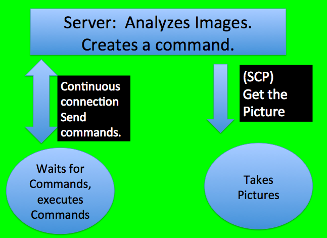
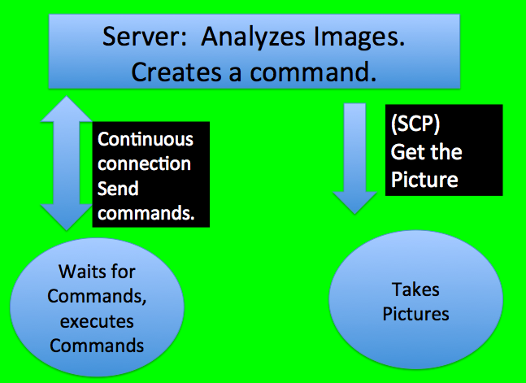
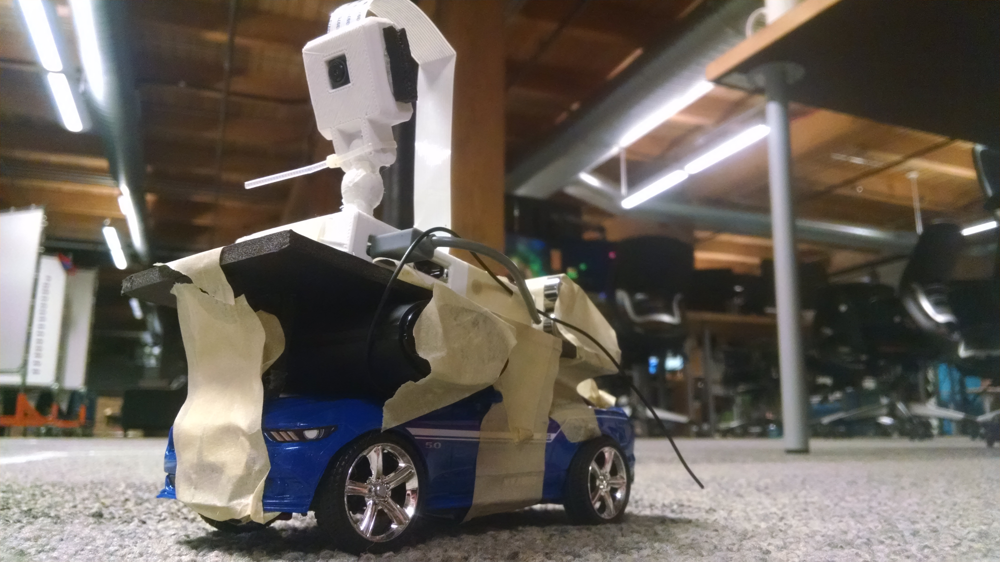

Raspberry Drive - Autonomous Car
Raspberry Drive was completed as an 8-day final project at Dev Bootcamp. Our group of four had zero experience working with any of the equipment needed, but we had an idea: Build a car that can drive itself. The challenge was a gaurantee we would learn something totally knew, and the challenges of the project are what drove us (and eventually the car).
First step, buy three eight dollar RC cars from Target. We broke apart all three cars, trying to figure out the best way to communicate between a Raspberry Pi and the car. Our team ended up wiring one Raspberry Pi into the circuit-board of the RC cars controller. 
Then we took another Raspberry Pi, attached it to a camera on and quite literally taped it to the top of the car. Our Server(aka my computer) would SSH into the Camera Pi and start taking pictures. Then it would SSH into the Controller Pi and setup a open socket to listen to commands. Both of these processes were run in Python threads and as background jobs so the actual driving could take place.
 

Once both pieces were ready, the driving could begin. The server SCPs into the Car and grabs the most recent picture. When it has the picture, it analyzes the picture using custom OpenCV logic and determines a driving command based on what it sees. Next, the server sends the command to the controller Pi over the open port that is continually listening.
 I learned a ton! Anyone wanting to check out Raspberry Pi, Autonomous Cars, Image Recognition software, Python asynchronous threads, go ahead and contact!
I learned a ton! Anyone wanting to check out Raspberry Pi, Autonomous Cars, Image Recognition software, Python asynchronous threads, go ahead and contact!
You didn't visit the page to hear me talk, check out the video.

**************** Check out the code on Github **************